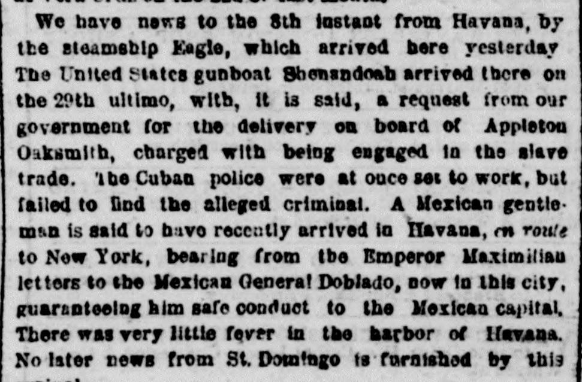
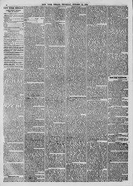

Man is said to h-ivo recently arrived in ITavaoa, m routeSe dice que un hombre llegó recientemente a La Habana, en ruta
The New York Herald. New York [N.Y.], October 13, 1864. Page 4. View the originalVer el original


See the full pageVer la página completaThe New York Herald reported that a man carrying letters from Emperor Maximilian to Mexican General Dobiado arrived in Havana en route to New York, and that there was very little fever in the Havana harbor. The arrival furnished no later news from St. Domingo. Additionally, the newspaper noted developments regarding Brazil and Uruguay, missing vessels including the Roanoke, and the grounding of the steamer Aphrodite off the North Carolina coast.The New York Herald informó que un portador de cartas del emperador Maximiliano dirigidas al general mexicano Doblado arribó a La Habana en tránsito hacia Nueva York, y que se registraban muy pocos casos de fiebre en la bahía habanera. La llegada no aportó noticias más recientes sobre Santo Domingo. Además, el rotativo dio cuenta de acontecimientos relativos a Brasil y Uruguay, de buques desaparecidos entre ellos el Roanoke, y de la varadura del vapor Aphrodite frente a las costas de Carolina del Norte.
FULL TEXT:TEXTO COMPLETO:
We have news to the 8th instant from Havana, by the steamship Eagle, which arrived here yesterday The United States gunboat Shenandoah arrived there on the 29th ultimo, with, it is said, a request from our government for the delivery on board of Appleton Oaksmith, charged with being engaged in the slave trade. The Cuban police were at once set to work, but failed to find the alleged criminal. A Mexican gentleman is said to have recently arrived in Havana, en route to New York, bearing from the Emperor Maximilian letters to the Mexican General Doblado, now in this city, guaranteeing him safe conduct to the Mexican capital. There was very little fever in the harbor of Havana. No later news from St. Domingo is furnished by thisTenemos noticias hasta el 8 del corriente de La Habana, por el vapor Eagle, que llegó aquí ayer. La cañonera estadounidense Shenandoah llegó allí el 29 del mes pasado, con, se dice, una solicitud de nuestro gobierno para la entrega a bordo de Appleton Oaksmith, acusado de estar comprometido en el tráfico de esclavos. La policía cubana fue puesta a trabajar de una vez, pero fracasó en encontrar al presunto criminal. Un caballero mexicano se dice haber llegado recientemente a La Habana, en ruta a Nueva York, llevando del Emperador Maximiliano cartas al General mexicano Doblado, ahora en esta ciudad, garantizándole salvoconducto a la capital mexicana. Había muy poca fiebre en el puerto de La Habana. Ninguna noticia más reciente de Santo Domingo es suministrada por este